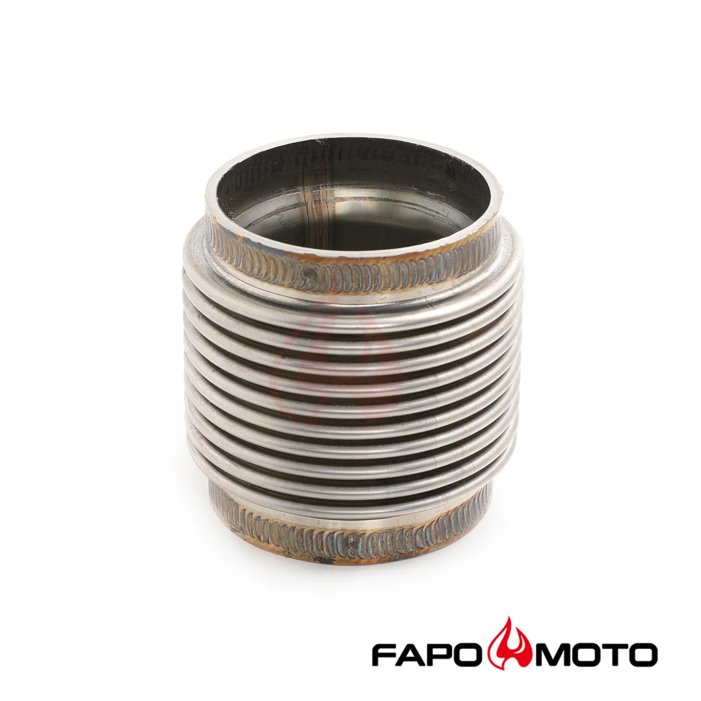

1 / 9Universal 2 ID T304 SS wydech FLEX BELLOWS 2.55 Long Flex Joint Pipe ULTRA STRONG FE902010
Uniwersalna rura elastyczna z mieszkiem ze stali nierdzewnej 2" ID 304 i długości 2,55", jak pokazano na zdjęciach. Wlot: 2" ID Wylot: 2" ID Materiał: stal nierdzewna 304 Długość od końca do końca: 2,55 cala Konstrukcja dwupokładowa ze wzmocnioną ścianą, BARDZO MOCNA Średnica wewnętrzna 2”/51,8 mm – długość całkowita 2,55”/65 mm Uniwersalna, w całości ze stali nierdzewnej 304, dla lepszego spawania RIDER SHOX udziel…
Universal 2" ID 304 stainless steel bellow flex pipe with a 2.55" length, as shown in the photos. Inlet: 2" ID Outlet: 2" ID Material: 304 stainless steel End to end length: 2.55" The double-deck design, with a Reinforced wall, ULTRA STRONG Inside Diameter 2''/51.8mm - Overall Lenght 2.55''/65mm Universal, Fully 304 Stainless Steel,for better welding RIDER SHOX provides the warranty for the 24 months period Inner Smooth Pipe, Compact shape, Robust Design
699,99 PLN
Opis produktu
Uniwersalna rura elastyczna z mieszkiem ze stali nierdzewnej 2" ID 304 i długości 2,55", jak pokazano na zdjęciach.
Wlot: 2" ID
Wylot: 2" ID
Materiał: stal nierdzewna 304
Długość od końca do końca: 2,55 cala
Konstrukcja dwupokładowa ze wzmocnioną ścianą, BARDZO MOCNA
Średnica wewnętrzna 2”/51,8 mm – długość całkowita 2,55”/65 mm
Uniwersalna, w całości ze stali nierdzewnej 304, dla lepszego spawania
RIDER SHOX udziela gwarancji na okres 24 miesięcy
Wewnętrzna gładka rura, kompaktowy kształt, solidna konstrukcja
Universal 2" ID 304 stainless steel bellow flex pipe with a 2.55" length, as shown in the photos.
Inlet: 2" ID
Outlet: 2" ID
Material: 304 stainless steel
End to end length: 2.55"
The double-deck design, with a Reinforced wall, ULTRA STRONG
Inside Diameter 2''/51.8mm - Overall Lenght 2.55''/65mm
Universal, Fully 304 Stainless Steel,for better welding
RIDER SHOX provides the warranty for the 24 months period
Inner Smooth Pipe, Compact shape, Robust Design
FAPO Polska
Ten produkt obsługujemy lokalnie
Autoryzowana obsługa
FAPO Polska prowadzi katalog, kontakt i zamówienia bez odsyłania klienta do zewnętrznych sklepów.
Dobór po aucie
Sprawdzamy dopasowanie produktu do pojazdu, rocznika i wersji przed finalizacją zamówienia.
Wsparcie po zakupie
Masz kontakt w Polsce w sprawach zamówień, wysyłki, gwarancji i zwrotów.